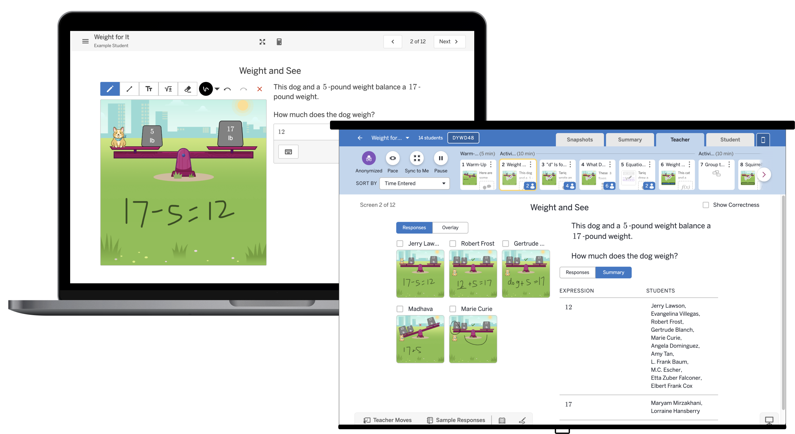
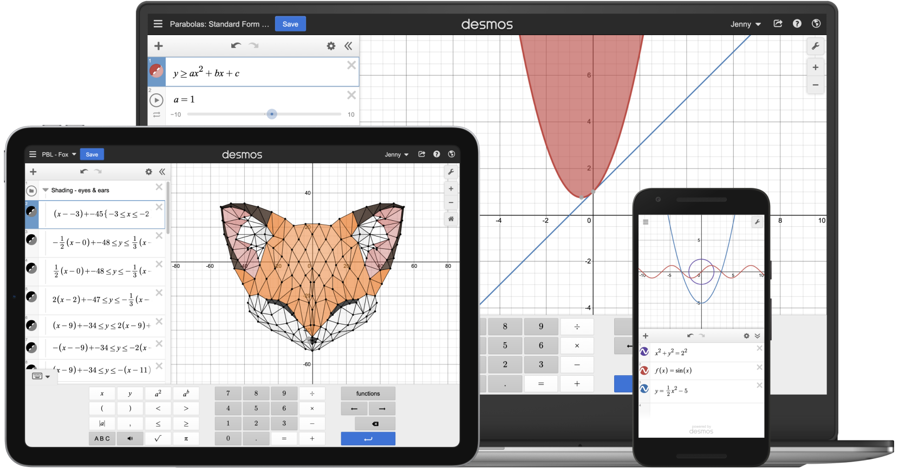

Hi there. I'm Jenny Brooks.
I love creating powerful, flexible, and delightful user and team experiences.

Now: leading the Learning Experience design team at Amplify.
We build a platform that supports students in seeing their ideas come to life as they learn and collaborate with their peers, teachers in becoming more confident and supported in their craft, and curriculum teams in creating best-in-class classroom experiences.

Previously: 10 years leading design at Desmos, which joined Amplify in 2022.
We started as a small team working on a free online graphing calculator. Working closely with math teachers, we built a few custom digital lessons as we explored ways to use technology to create powerful learning experiences. That led us to build a free tool to create classroom activities, Activity Builder, which we used to create a middle school math curriculum that centers student thinking. The curriculum received perfect scores from EdReports and improved student learning outcomes.